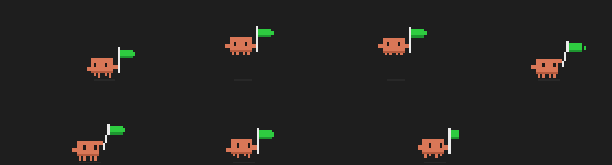

PROJE / GELİŞTİRME HİKÂYESİ
claude-done-pixel
Claude Code işini bitirince ekranın köşesinde bir piksel karakter koşup zıplar ve yeşil bayrak sallar; terminali kontrol etmeye son.

Neden yaptım?
Claude Code uzun bir görevi bitirdiğinde terminali tekrar tekrar kontrol etme ihtiyacını azaltmak. Ekranın köşesindeki kısa bir piksel animasyonu işin tamamlandığını gösterir.
Proje animasyonunun hareketli önizlemesi
Nasıl çalışıyor?
Verdiğim karar
Bildirimin odağı çalmaması ve tıklamaları engellememesi önemliydi. Görünür bir işaret verirken kullanıcının o sırada yaptığı işi kesmemesini hedefledim.
Sorunlar ve kontroller
Burada SkyTrack’teki gibi belgelenmiş belirli bir hata öyküsü paylaşmıyorum. Tasarımda kontrol edilmesi gereken durumlar; ayarların korunması, art arda bildirimler ve pencerenin kullanıcı etkileşimine etkisi.
AI’ın rolü
Bu projede önemli olan olay ile görüntüyü ayırmak: Stop hook olayı tetikler, PowerShell animasyonu gösterir. AI ile geliştirme anlatımında da ortaya çıkan dosyalar kadar bu bağlantıyı açıklıyorum.
Bir sonraki geliştirme için
Bir sonraki adım olarak önce basit bir bildirimle olayın doğru yakalandığını doğrulayıp karakter animasyonunu daha sonra eklemek değerlendirilebilir.
Kaynaklar ve devamı
Projenin güncel kurulum adımları, sürümleri ve değişiklikleri GitHub’da.